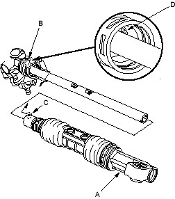
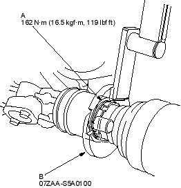
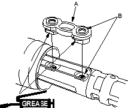
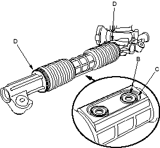

- Push the rack housing (A) into the gearbox housing (B) so the notch (C) is aligned with the pin (D) on bottom of the gearbox housing inside.

- Tighten the lock screw (A) by hand first, then set the special tool (B) on the lock screw securely. Tighten the lock screw to specified torque.

- Remove the special tool.
- Apply multipurpose grease to the sliding surface of the slider guide (A). Slide the steering rack all the way to left by turning the pinion shaft, and place the slider guide on the steering rack by aligning the bolt holes (B).

- Centre the steering rack within its stroke, and align the slider guide (B) with the holes (C) of the boot. Fit the slider guide to boot by pressing the around edges of the holes securely.

- Clean off any grease or contamination from the boot installation grooves around on the housing.
- Expand boot by removing the vinyl tape and fit the boot both ends (D) in the installation grooves on the rack housing.